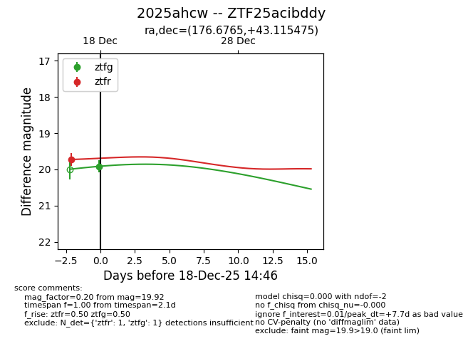
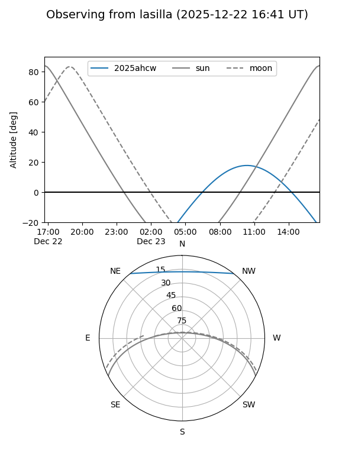
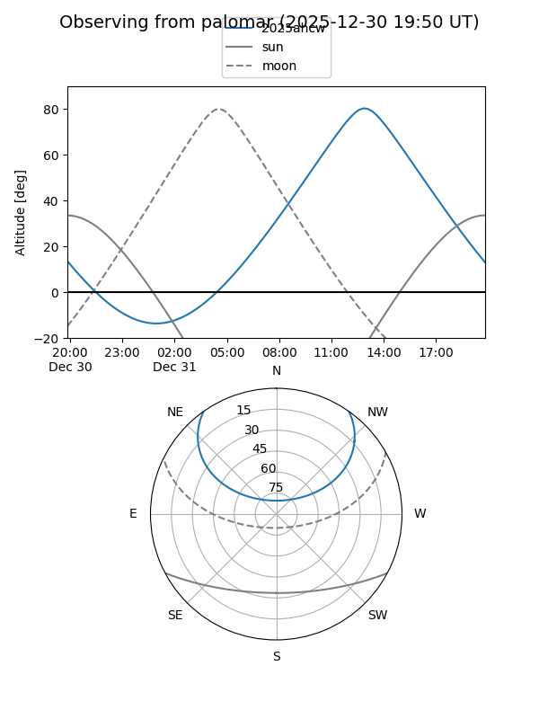
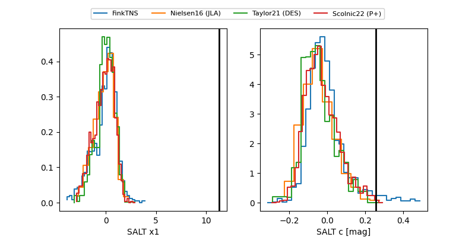

2025ahcw
Target 2025ahcw at 2025-12-24 16:17
Aliases and brokers:
FINK: fink-portal.org/ZTF25acibddy
Lasair: lasair-ztf.lsst.ac.uk/objects/ZTF25acibddy
ALeRCE: alerce.online/object/ZTF25acibddy
TNS: wis-tns.org/object/2025ahcw
YSE: ziggy.ucolick.org/yse/transient_detail/2025ahcw
alt names
ZTF25acibddy (ztf,fink_ztf)
2025ahcw (tns,yse)
Coordinates:
equatorial (ra, dec) = 176.6765,+43.11547
equatorial (HMS+DMS) = 11:46:42.36,+43:06:55.71
galactic (l, b) = (158.1128,+69.32221)
Flags:
Photometry:
last ztfg=20.21, ztfr=19.72
3 ztfg, 1 ztfr detections
Lightcurve

Visibility


Additional plots
